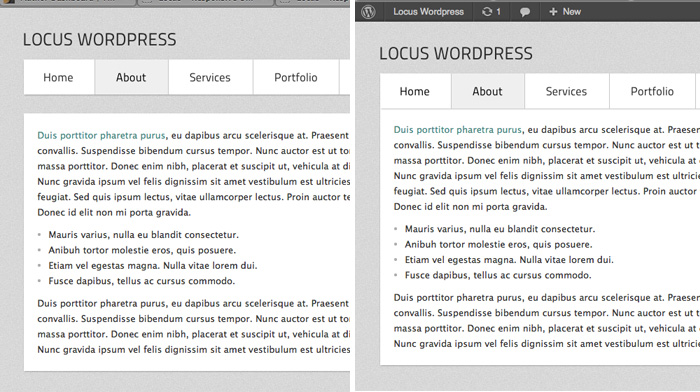
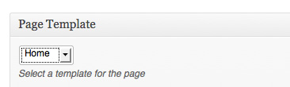
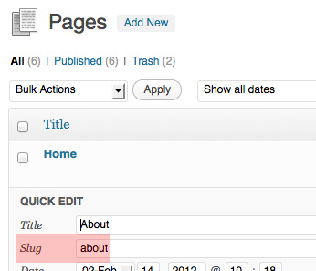
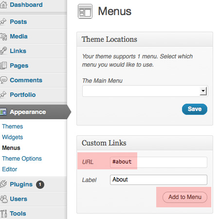
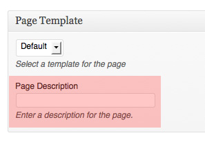

FAQ
Space between menu and the sections (header height)
Depending on your logo height, you may have to increase the header height through Appearance - Theme Options - General. This value also effects the space between the menu and sections.
Also when you check the space below the menu, please make sure you don't have the adminbar on top because it pushes the menu about 20px below and you may not be able to see any space below the menu but your visitors will see the space. To be sure about the space we recommend you logout or disable the adminbar or check the page on a different browser (which you are not logged into wp-admin)
Shortcodes
You can see the list of available shortcodes here.
Beginning
1. Installing the Theme
To be able to use the theme, you need to install Wordpress on your server. If you don't know how to do it, please visit: http://codex.wordpress.org/Installing_WordPress
IMPORTANT: Before installing the theme please deactivate the plugins you have from your previous themes.You have two options to install the theme:
- FTP: Please unzip the "locuswp.zip" that is inside the theme directory of the theme package and upload it into wp-content/themes.
- Wordpress: Or you can simply upload the "locuswp.zip" that is inside the theme directory, using Appearance - Add New Themes - Upload in Wordpress admin.
After uploading the theme you need to activate it from Appearance - Themes
2. Importing Dummy Content
We recommend you install the dummy content which will guide you on creating posts and pages compatible to the theme.
To import the dummy content go to Tools - Import - Wordpress and browse for dummy-content/dummy-content.xml in template package. Then after the upload, don't forget to check "Download and import file attachments" under Important attachments.

Setting Up
Pages, Order, Menu (+Video)
If you have installed the dummy content, you should already have your pages with certain order and the menu.
If you don't have the dummy content, or want to add a new page, go to Pages - Add New Page
You will need to assign a template to your pages using the "Page Template" meta box in the page editor:
There are 5 available page templates:
- Default (can be used for multiple pages)
- Portfolio (can only be used once)
- News (can only be used once)
- Gallery (can be used for multiple pages)
- Contact (can only be used once)
If you would like to change these orders go to one of the pages and under "Page Attributes" change the "Order" number as you wish. Or you can change the order from "Quick Edit" on the "Pages" page.
The default order of the pages is as follows:
- Home: 1
- About: 2
- Services: 3
- Portfolio: 4
- News: 5
- Gallery: 6
- Contact: 7
For easy ordering you can use a plugin called "Simple Page Ordering" (link)
To be able to add your pages to the menu you first need to learn what the "slug" of your page is. You can find it our from "Quick Edit" on the "Pages" page.
Then in "Appearance - Menu" you will create your menu items from "Custom Links". URL will be "#slug" and the Label can be anything you want.
You can change the order of menu items by simply dragging and dropping them.
VIDEO
The video below demonstrates how you can create a menu:
The video below demonstrates how you can order pages:
The title of the pages will appear above each page on mobile/tablet device views. You also have the option to enter a descriptive text next to the title. You can add this text using the "Page Description" meta box in the page editor.
Pages
Home
To create a home page open a new page using Pages - Add New and select "Home" as its template using the "Page Template" meta box in the page editor.
The contents of homepage in the live preview are slider shortcode and mini-services shortcode with columns.
You can find the sample home page content if you install the dummy content. You can easily edit the dummy slider images with your own images. If you don't install the dummy content you can use the slider shortcode which can be found here.
There are service icon and descriptions with 6 columns inside the home page by default in the dummy content. You can use the column shortcodes that are available in the theme and change the number of columns or you can remove these mini services entirely by deleting the code under slider shortcode.
List of available shortcodes: [Link].
Portfolio (+Video)
To create a portfolio page, first you will need to create some portfolio posts. To do that go to Portfolio - Add New
For each thumbnail you will need to create a new portfolio post. The image you set as the "Featured Image" will be the thumbnail. And the images/videos you add using the "Slides" meta boxes in the editor, will be displayed as the full-sized images in the lightbox. You need to assign each of your portfolio posts to categories.
After creating your portfolio posts, to display them on the portfolio section, you will need to create a new page from "Pages - Add New" and assign "Portfolio" as its template using the "Page Template" meta box in the page editor
The portfolio item title will be displayed as caption in the lightbox as well. You can also add more information regarding the item via the post editor.
VIDEOS
The video below demonstrates how you can create a portfolio:
The video below demonstrates how you add multiple images to a portfolio post:
The video below demonstrates how you add videos to a portfolio post:
Please note that you can only have one portfolio page.
Minimum size for portfolio thumbnail size is 420x266px.
News
To create a news page, first you will need to create some news posts. To do that go to Posts - Add New
To create the news page, you will need to create a new page from "Pages - Add New" and assign "News" as its template using the "Page Template" meta box in the page editor.
Then all the posts you create will be displayed in this news section.
Please note that you can only have one news page.
Gallery (+Video)
You can have as many galleries as you want. To create one, simply open a new page using Pages - Add New and select "Gallery" as its template using the "Page Template" meta box in the page editor.
Then upload your images using the Add Media button in the page editor. Each image you attach will be visible in this gallery page. You can change the order of your images by simply dragging and dropping them.
The gallery item title will be displayed as caption in the lightbox. You can also add more information to your images by filling "description" field of each image.
The video below demonstrates how you can create a gallery:
Contact
To create a contact page open a new page using Pages - Add New and select "Contact" as its template using the "Page Template" meta box in the page editor.
The text you add in the editor will be displayed on the right side of the contact page. The contact information you see in the live preview was created using unordered list with higlight shortcode and the map embed code is taken from Google Maps website. If you install the dummy content you can find the sample text and map.
To edit the labels, error/success messages of the form and add your email address to receive the messages sent through the form go to "Appearance - Theme Options - Form" and fill the necessary fields.
If your hosting requires SMTP authentication, you can enter your STMP details in Appearance - Theme Options - Forms. If you don't know your SMTP details, please contact your hosting provider.
Default (About, Services)
About and Services pages in the live preview were created using the "Default" page template. You can add any content on these pages using HTML elements, shortcodes etc.
You can see the list of available shortcodes here.
Customization
Changing skin and background images
The theme includes three different skins: Light, Darklight and Dark. Each skin has 3 different background image options. You can change the skin and the background image through Appearance - Theme Options - Styling.
You can use the Custom CSS field to add your own CSS rules.
Translating the theme
Tools
The only tool you need for translating a WordPress theme is Poedit.
Follow the instructions on its website http://www.poedit.net/ to install the tool.
It’s very simple. Once you have Poedit, you’ll be ready to translate.
How to translate the theme
To translate the theme, you need to find the file named en_EN.po located in the lang directory inside the theme folder. Open it.
From this point, you must go through every line of text and translate it to your language.
You must first click the text string you want to translate. Then, you type it in your language at the bottom of the screen.

Saving the translation
Once you’ve translated the theme, you’ll want to save it two times. Once as a .po file and once as as .mo file. You must save this according to your language code. A list of language codes can be found here: http://codex.wordpress.org/WordPress_in_Your_Language.
For example, French is fr_FR, so you need to save the translation as fr_FR.po first. Then, you need to save it as fr_FR.mo
How to use the translation
To use a translation, you first need to add the .mo and .po files to lang directory of the theme folder.
Then, you’ll need to make sure your wp-config.php file matches your language files.
For example, if using a French translation, you’ll need to add the fr_FR.po and fr_FR.mo files to lang folder. Then, you’ll want to set your language in wp-config.php, like this:
define ('WPLANG', 'fr_FR');
Once you save that file, the theme will be in your language.
Sources
Scripts
Icons
- Titillium: [Source]